TIPSY BEE FARMS · HOME MOVIE ARCHIVE · TAPE 1 OF 1
An Unauthorized
Biography
Four generations of Rogue Valley stubbornness — pears, gliders, one human-powered helicopter, and the bees that ended up with the naming rights. Transferred from VHS. Tracking not guaranteed.
A Mountain Made of Pears
ROGUE VALLEY, OREGON · c. 1931 · 00:02:10 →

Begin with the pears, because this family begins with pears. The man sitting inside the harvest is the great-grandfather, and that is not a gravel pile behind him — that is the bald hill, and the mountain he has chosen as furniture is Comice pears: the most difficult, most delicate, most expensive-to-ship pear on earth, which the Rogue Valley grew better than anywhere else and which he grew by the literal ton.
Notice that he did not stand next to the pears. He sat down in them, in a hat, and waited for the camera. Every generation of this family will repeat this exact move with a different machine.
Bows, Then Airplanes
MEDFORD, OREGON · c. 1925 – 1934 · 00:09:40 →
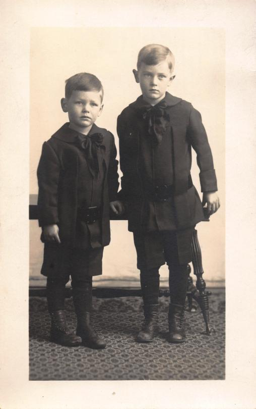
Curtis and his brother Charles, in velvet bows that were somebody else’s idea. The photographer got one frame and no smiles. Family consensus holds that Curtis is the one already redesigning the studio’s light fixtures in his head. Family consensus cannot agree on which one is Curtis.
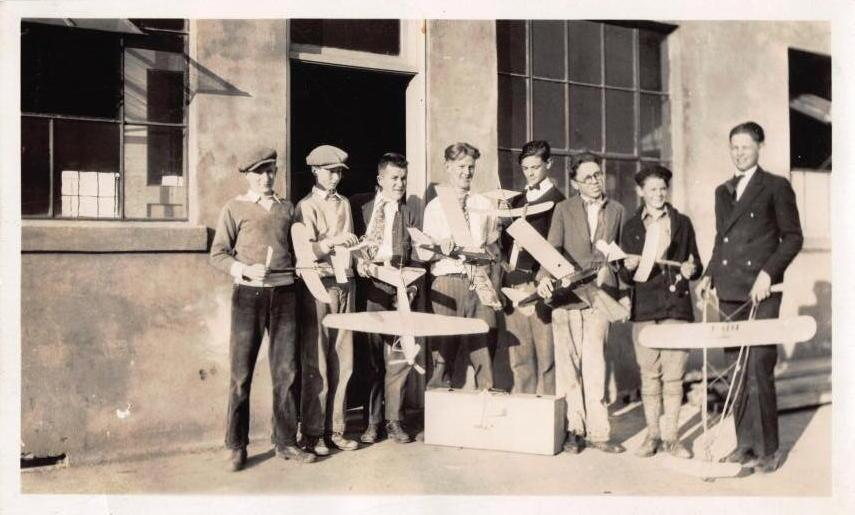
Ten years later the bows are gone and the airplanes have arrived. The model airplane club: eight boys, one necktie, and a summer’s worth of balsa and tissue held up like livestock at the county fair. These are not toys — you can tell because nobody is playing. Curtis had found the two loves of his life within a mile of each other: pear country, and the air above it.
The Navy, Then Home
1944 – c. 1965 · 00:17:05 →
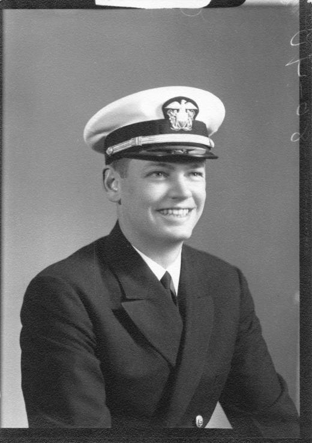
The Navy took a valley kid who built airplanes out of balsa and stationed him next to the real thing. He came back an officer, with the grin you see here — the grin of a man who has witnessed industrial quantities of aviation and now regards the entire world as a set of parts. The dress whites went into a cedar chest. The grin never fully came off.
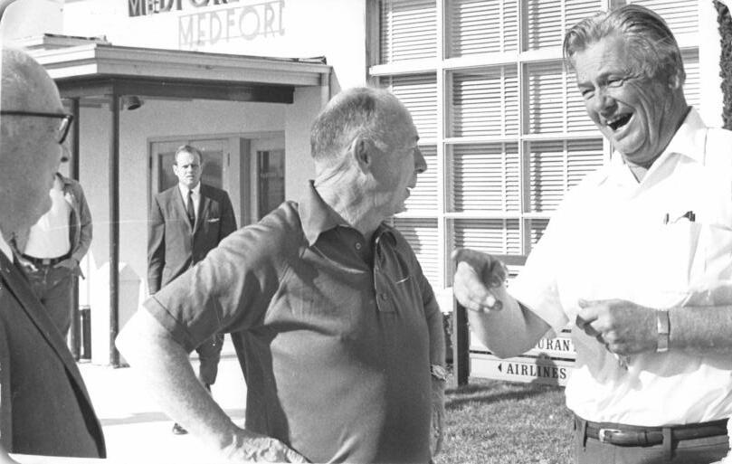
Home again. The Medford airport terminal, with Rosenthal, mid-story. Aviation people locate each other in a small valley the way bees locate clover, and when they do, they stand outside the terminal saying true things about lift until somebody’s wife leans on the horn.
The Orchard Decades
THE LONG MIDDLE · c. 1948 – 1971 · 00:25:30 →
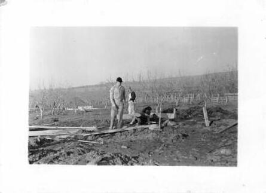
Then the pears called in the family debt. Curtis broke ground in the orchard and stayed for decades — grafting, thinning, irrigating, doing arithmetic against frost. This is what the middle of a life looks like when the beginning was aircraft: rows and seasons, hands busy at ground level, while some other part of the man stays up in the air, circling.
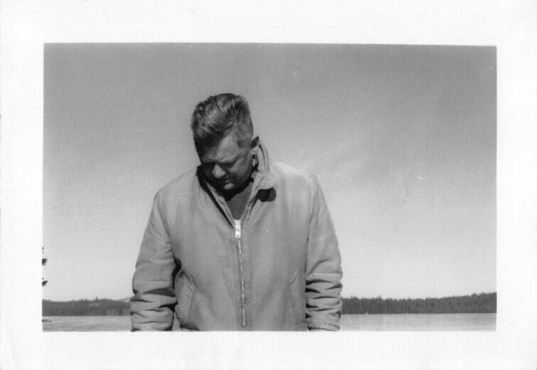
Every archive has one photograph like this, and it is usually the honest one. Winter light, a lake, head down. He never called the orchard a detour. Pears, he said, paid for tools. And tools — give them thirty years — become wings.
The Glider
ONE WINDY AFTERNOON · UNDATED · 00:33:00 →
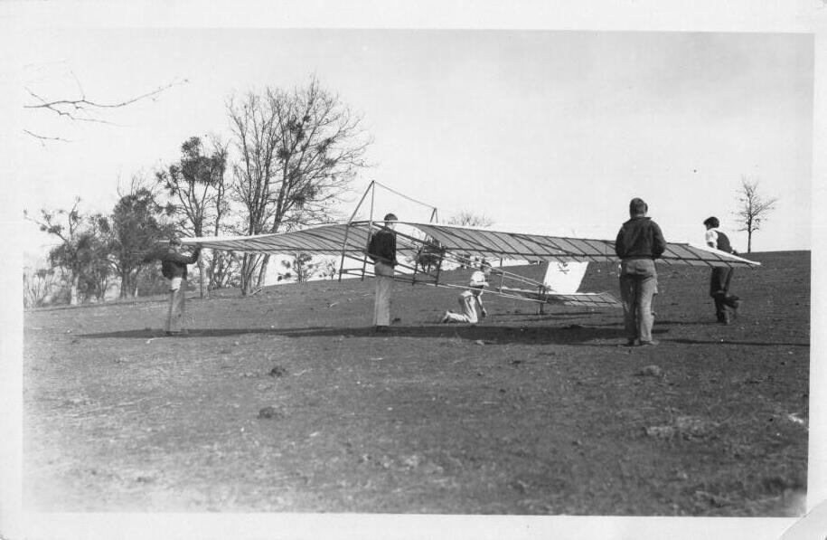
He built a glider. Not a model — a glider, of spruce and wire and doped fabric. He recruited a crew: sons, neighbors, the reliably curious. They walked it up a bald hill into the wind, and Curtis ran the numbers one last time, out loud, the way you do when the test pilot is family.
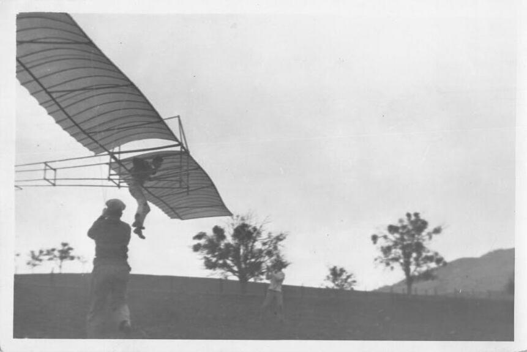
Then it flew. The framing is crooked because the photographer was running. A man is hanging under a wing that was built in a barn, high enough for the word incident to change departments — from farming to aviation. Nobody in the frame is standing casually. The negatives carry no date and the family offers three. On one point every account agrees: it flew, and Curtis never entirely came down.
The Tipsy Bee
THE MASTERWORK · 1990 – 1994 · 00:41:20 →
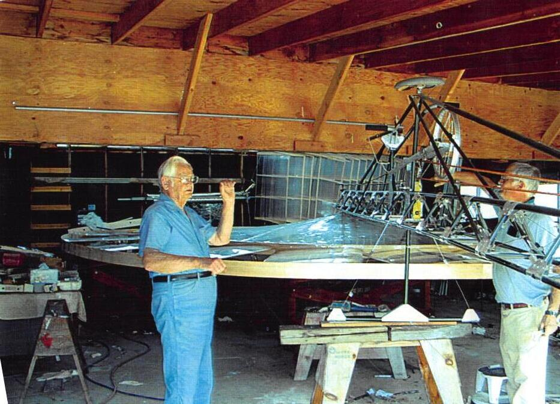
Every inventor eventually builds the machine that is a self-portrait. Curtis’s was a helicopter powered by nothing but a human being: one rotor nearly the width of the barn that held it, geared to bicycle pedals and the legs of whoever he could talk onto the seat. He named it the Tipsy Bee — a fat, cheerful thing with no business flying, attempting it anyway. He was in his seventies.
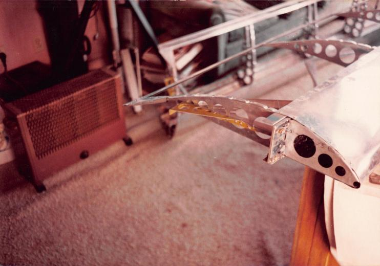
The mathematics said a strong cyclist produces about one-third of one horsepower. Curtis considered that the horse’s problem. Ribs were machined at home and finished in the living room, because the shop wasn’t heated and aluminum holds a grudge.
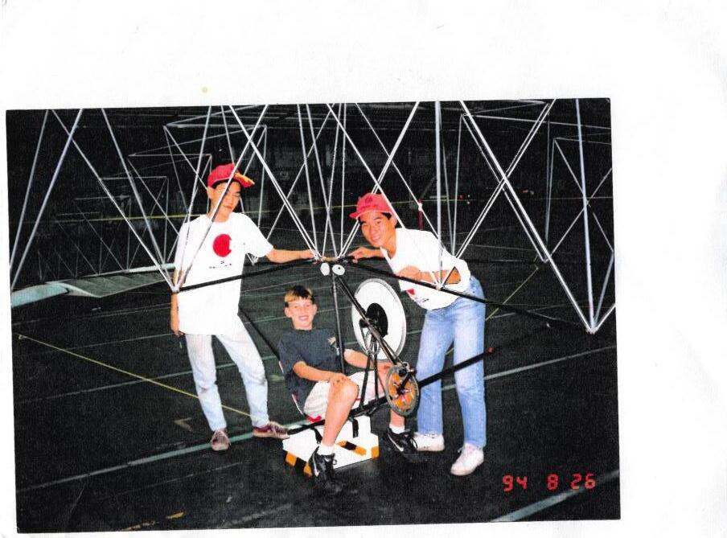
August 26, 1994 — the day before. That is Andrew, the grandson, sitting at the pedals of the rival machine while two of the Japanese team stand by, grinning. Rivals so serious, and so generous, that they let the other side’s kid try the seat. Andrew climbed off that machine with his life more or less decided.

August 27, 1994. The Tipsy Bee on the hangar floor, rotor laid out like a compass rose, a pedaler aboard, family on folding chairs. It did not set the record that day. It did something rarer — it existed: a helicopter from a pear farm, indoors at Boeing, with its inventor watching from a metal chair with his arms crossed, satisfied.
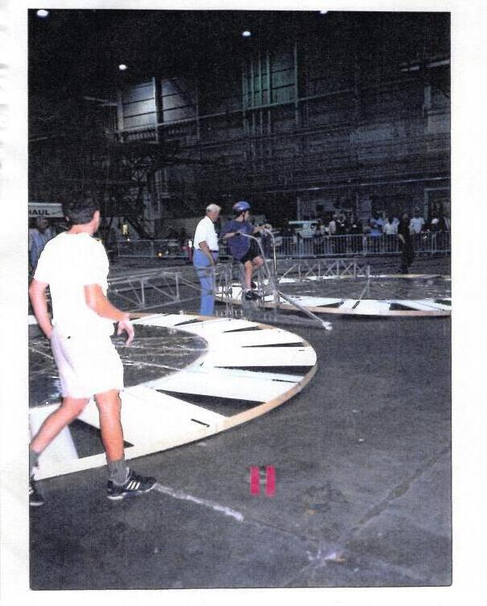
And this is Andrew on the family machine, pedaling with everything a boy has — which the math rates at a third of a horsepower, and the family rates considerably higher. Look at the rotor: that is the same span you saw filling the barn. Some families hand down a watch.
The Last Pear Tree
GOLDEN HOUR · PRESENT DAY · 00:52:45 →
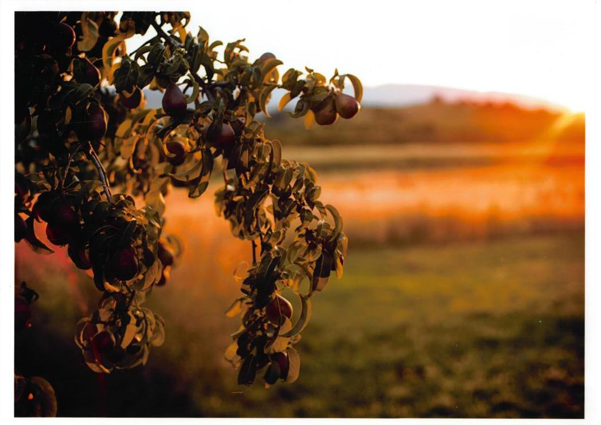
The orchard is mostly memory now — economics, time, the usual weather. One pear tree still stands, and at golden hour it does this. The family kept it for the same reason they kept the tape you are watching.
The farm itself refused to end; it pivoted. Bees instead of propellers, brine instead of dope-and-fabric; honey, mead, and pickles where the packing crates used to stack. Andrew runs it now. And the name on every jar is the Tipsy Bee — a machine that tried to fly on the strength of a single human being. Which is, if you think about it, a fair description of a family farm.
End of tape. The bees continue.
- SHOT ON
- various cameras, none level
- TRANSFERRED FROM
- VHS · SP mode · one sitting
- PEARS
- the great-grandfather
- ALTITUDE
- Curtis
- LEGS
- Andrew
- ARCHIVE
- Tipsy Bee Farms · Medford, Ore.
TIPSY BEE FARMS · ROGUE VALLEY · MEDFORD, OREGON
HONEY · MEAD · PICKLES — EST. SOMEWHERE BETWEEN THE PEARS AND THE HELICOPTER